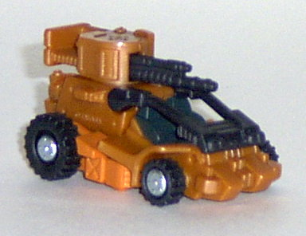
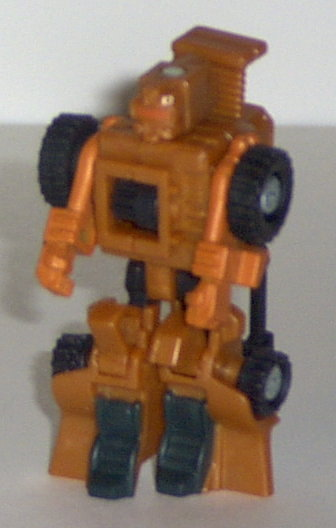
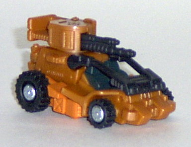
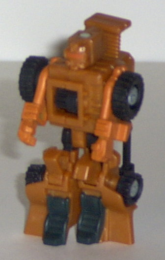
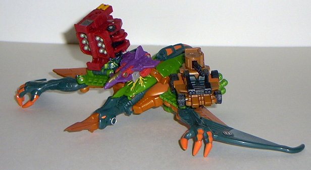
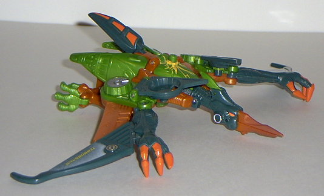
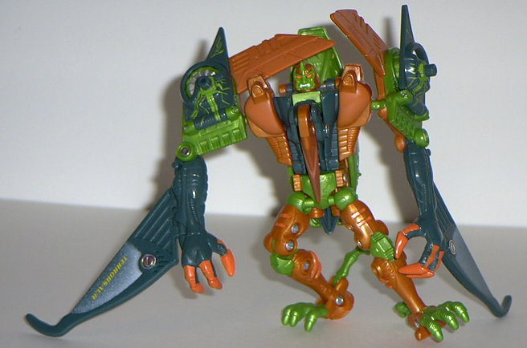

Ironhide
Ironhide
 
Allegiance : Minicon
Size : Mini-Con
Difficulty of Transformation : Very Easy
Color Scheme : Black, dark pumpkin orange, and some pumpkin orange
Rating : 6.0
Ironhide


Allegiance
: Minicon
Size
: Mini-Con
Difficulty of Transformation
: Very
Easy
Color Scheme
: Black, dark pumpkin
orange, and some pumpkin orange
Rating
: 6.0
(NOTE: Because this is a repaint, this is not a full-blown review. This mainly covers any changes made to the mold and the color scheme, and merely compares it to Dune Runner. For a review on the mold itself, read the review of Dune Runner here .)
Ironhide really isn't
all that different from Dune Runner, color-scheme wise, which is a bit
dissapointing. Replace Dune Runner's tan with a rusty, pumpkin-esque brown,
and the green and gray parts with black. Really, Ironhide's only got two
major colors on his body, and that works against him in the eye-catching
apartment. He also doesn't have any more paint detailing than his forerunner,
and it was desperately needed then, too. The color scheme itself fits,
don't get me wrong- rusty brown and black are great for a sand rail- but
more detailing and variety would have made him much more digestible. Also,
the paint used on his arms doesn't quite match up with the plastic on the
rest of his body, so it kinda stands out in a way it shouldn't.
Ironhide's alright,
but he lacks even as much color variety as Dune Runner had. This makes
me have to recommend his predecessor over him, and his predecessor was
pretty mediocre himself.
 Terrorsaur
Terrorsaur



Allegiance
: Decepticon
Size
: Super-Con
Difficulty of Transformation
: Easy
Color Scheme
: Pumpkin orange, dark
blue-green, light jungle green, and some bright orange, silver, chrome
silver, yellow, black, and white
Powerlinx ports
: 3 (0 gimmicked)
Rating
: 7.1
(NOTE: Because this is a repaint, this is not a full-blown review. This mainly covers any changes made to the mold and the color scheme, and merely compares it to Terrorsaur Transmetal. For a review on the mold itself, read the review of Terrorsaur Transmetal here .)
This time around, Terrorsaur
(or, as I like to call him, "Hobgoblinsaur"), sports a very halloweeny
color scheme. That pumpkin orange really stands out against the jungle
green and blue-green. Granted, it's not a TERRIBLE color scheme, but it's
a little loud. Although the green is certainly appropriate for a reptilian
Transformer, the orange doesn't really... fit. However, this version of
Terrosaur sports quite a bit more paint detailing than either of his predecessors,
which is a nice plus. He also has a nice white fade pattern on his wings,
which contrasts rather nicely with the blue-green.
Like the other Armada
Beasts, Terrorsaur has been remolded with Minicon ports- three, to be exact.
But none of them are gimmicked- they just hold Minicons, that's it. The
problem is, the ball joints on his shoulders are already limp- putting
the added weight of Minicons on them only magnifies this effect. The Minicon
port on his back I have no complaints on, though, and the "electric circuit"
paint patterns surrounding the ports are awesome. Also like the other Armada
beasts, Terrorsaur has had the "chrome" parts replaced with just normal
plastic- with the exception of a few circles on his wings and head. Personally,
I don't mind it- no danger of chrome chipping here! Oddly enough, Armada
Terrorsaur has no sign of a Decepticon symbol remold anywhere on him, although
he is the only Armada Beast to still have his name tattooed on his body.
Huh...
Terrorsaur is a pretty
decent mold, but his current color scheme is a bit too loud. The extra
paint detailing and Minicon ports are a plus, though. Still, they don't
quite make up for the new color scheme, which is why this is my least favorite
version of the Terrorsaur Transmetal mold released so far.
No Stats
Review by Beastbot